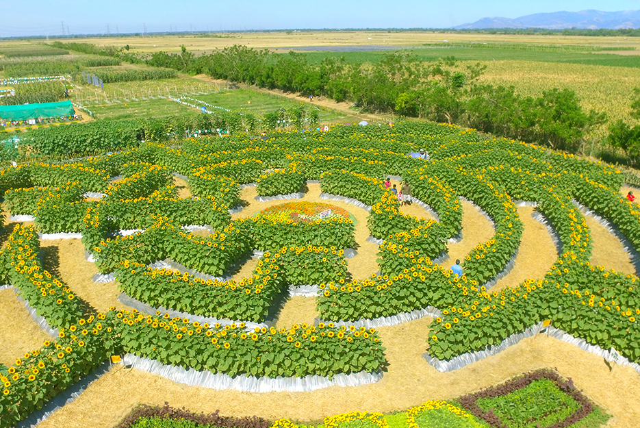
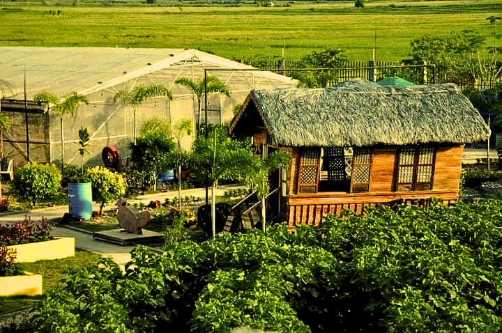
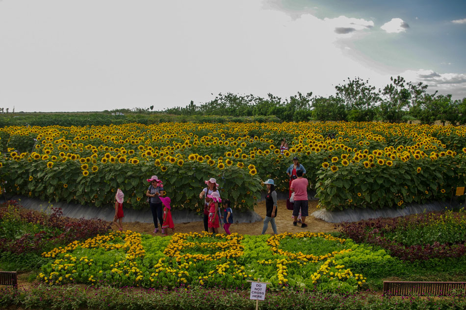

Location — Tayug Sunflower Eco Park
Visit us at: Barangay C. Lichauco, Tayug, Pangasinan — the home of the first sunflower maze in the Philippines. 🌻
Activities / Fees

Sunflower Maze — Php 100

Picnic & Rest — Cottage rental

Farm Tour — Guide available